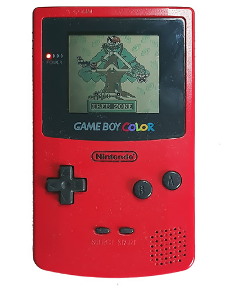
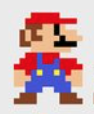
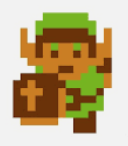

Feature-rich editor
This example is a feature-rich preset that contains almost all non-collaborative CKEditor 5 features. You can use it to create your own content or to paste some existing content from Microsoft Word, Google Docs, text documents, or any online resources.
This editor was configured specifically to allow testing as many features as possible in one demo, with a multiline toolbar (with some features grouped into dropdowns) that gives you easy access to all available features. It is based on the classic editor, providing you with a boxed editing area with a toolbar, placed in a specific position on the page. The toolbar has been specially configured to host as many features as possible in a convenient setup. CKEditor 5 offers a dedicated accessibility help dialog that displays a list of all available keyboard shortcuts in a dialog. It can be opened by pressing Alt + 0 (on Windows) or Option + 0 (on macOS) or via toolbar.
Thanks to the autoformatting feature you can also use Markdown-like inline shortcodes as you type to create and format your content without using the toolbar buttons. The slash command feature lets you format and insert content on the go.
You can also see the collaborative document editor, to try out features such as comments, comments archive, track changes, or revision history, and other features enhancing document editing functions.
Handheld emperor
Nintendo, a Japanese electronics company, started as a hanafuda cards manufacturer in 1889. In the mid-1970s, they entered the early video games market and became famous for their home video and handheld game consoles. Nintendo introduced consoles like the NES, SNES, and Wii. But the most revolutionary was for sure the Game Boy.
A countdown of Nintendo handhelds

- 1. Game & Watch was Nintendo's first product offering out-of-home gaming. From 1980 to 1991, over a hundred games were released, gaining great popularity.
-
2. In 1989, the original Game Boy was released. The new amazing machine utilized a cartridge system, allowing the users to play a multitude of games of all kinds. This was a historical game-changer.
- 2.1. It was followed by a number of versions, such as Game Boy Color or Game Boy Advance.
-
3. In 2004, Nintendo introduced a new console family called the Nintendo DS. It sported a dual LCD screen in a folded shell, with the lower one being a touchscreen.
- 3.1. The most prominent development was Nintendo 3DS, which offered a 3D display.
- 4. 2017 brought the hybrid experience for both couch-preferring gamers and handheld enthusiasts with the release of the Nintendo Switch. It offers both a TV mode with high-definition graphics and a handheld mode using the built-in 6.2" display.
Handheld consoles' popularity
While the most recent Switch is a prevalent choice nowadays, the 2DS and 3DS consoles are still popular. The king, however, is none other than the original wonder — the Game Boy.
| Console | Production dates | Pieces sold (2021) |
| Game & Watch | 1980-1991, 2020-2021 | 44 million |
| Game Boy | 1989-2010 | 201 million 1 |
| Nintendo DS | 2011-2020 | 76 million 2 |
| Switch | since 2017 | 140 million 3 |
Handheld gaming experience
It's dangerous to go alone! Take this.
The Legend of Zelda, 1986
Games offered by Nintendo include multiple genres, out of which the famous platformer arcade Super Mario

and the adventure role-play Legend of Zelda
series are probably the most iconic.Games that can be played on the handheld family include (examples of games listed):
-
Action & adventure games
- The Legend of Zelda series
- Chrono Trigger
-
First-person action games
- Splatoon
-
Role-playing games (RPG)
- The Pokémon series
- The Final Fantasy series
By default, CKEditor 5 filters out any content that is unsupported by its plugins and configuration. Check out the General HTML Support (“GHS”) feature that allows you to enable HTML features that are not explicitly supported by any other dedicated CKEditor 5 plugins.
While this demo has the import from Word feature enabled, please consider that the comments and track changes features are not enabled and hence these elements will not show up in the content. Read more about handling such situations in the import from Word’s features comparison guide. You can test these features working together in the official import from Word demo.
If you are interested in effortlessly building similar editor presets, check out our interactive Builder. It offers an easy-to-use user interface to help you configure, preview, and download the editor suited to your needs. You can easily select the editor type, the features you need, the preferred framework (React, Angular, Vue or Vanilla JS) and the preferred distribution method. In the end, you get ready-to-use code tailored to your needs – or a prompt for your AI coding agent!